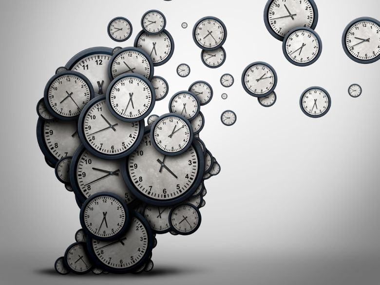
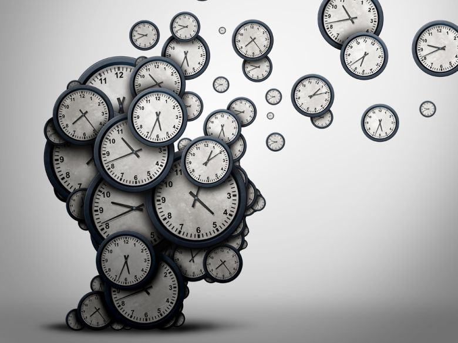

Navigation bar
Bet šoreiz mēs esam apkopojuši dažus neierastus padomus, kas tev var palīdzēt uzlabot laika pārvaldību un efektivitāti vadībā: Divu minūšu likums: ja uzdevuma izpilde prasa mazāk nekā divas minūtes, veic to nekavējoties. Ātri atbildot uz e-pastiem, veicot īsus telefona zvanus vai pildot nelielus uzdevumus uzreiz, Tu neuzkrāsi garu darāmo darbu sarakstu, un dienas otrajā pusē būs vairāk laika veikt garākus un laikietilpīgus uzdevumus. Ievies "Divu picu noteikumu": Džefa Bezosa iedvesmotā Divu picu noteikuma galvenā doma ir šāda – ja komandu nevar pabarot ar divām picām, tā ir pārāk liela. Saglabājot komandas mazas un elastīgas, lēmumu pieņemšana kļūst ātrāka un efektīvāka, komunikācija uzlabojas, kā arī sanāksmes laiks būtiski samazinās. Organizē sanāksmes pastaigas laikā: tā vietā, lai sēdētu sapulču telpā, apsver iespēju vadīt sapulces pastaigas laikā. Jā, tas izklausās savdabīgi, bet, ja sanāksme plānota pāris dalībniekiem, pastaiga var būt lielisks risinājums. Sanāksmes pastaigas laikā ne tikai veicina fizisko aktivitāti, bet arī mēdz būt rezultatīvākas un radošākas.
 

Izmantotie informācijas avoti.